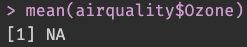
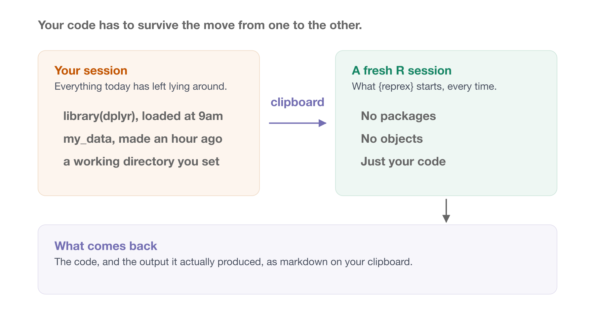
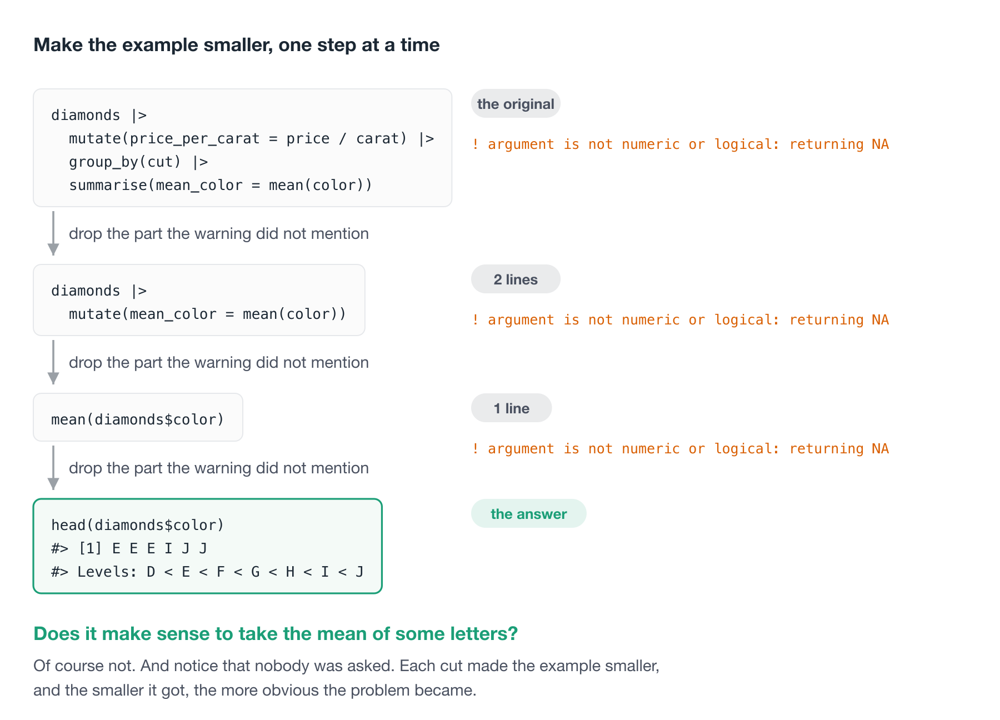
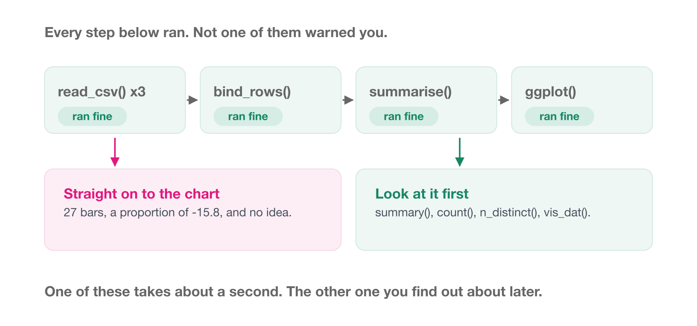

[1] NA5 Writing a reprex / getting unstuck
Everyone gets stuck. While avoiding being stuck in the first place is ideal - one of the best skills to learn is to get unstuck quickly, and to be able to ask for help in a way that actually gets you an answer.
This chapter is about the reprex, which is short for reproducible example. If you can demonstrate how you are stuck, you often solve the problem in the process of creating that demonstration. Then, if you can’t, you have made it easier for someone else to see how your are stuck. That makes it easier for them to help you.
Overview
Duration 45 minutes
Questions
- What is a reprex, and why would I want one?
- Does something have to be broken before a reprex is useful?
- How do I cut a broken script down to something someone else can run, and why does that so often solve it?
- How do I find a bug that never errors?
- Which errors am I going to hit over and over, and what do they mean?
5.1 What is a reprex?
A reprex is code, plus the output that code produced, in a form somebody else can run.
Say we want to know why this is happening - how can this be NA?
You can read what I ran, you can see what I got, and you can paste it into your own R session and get the same thing.
There are other ways to share this:
- You could send somebody just the code,
mean(airquality$Ozone) - But then they have to run it to see what you saw, and guess which packages you load.
You could send a screenshot of your console instead:

Now they can see the output, but they can’t run it, and they can’t copy a line out of it to try something.
You could send both, by hand, every time - the code, AND the screenshot And now it’s on you to make sure the code and the output actually match.
It gets worse with a plot. If the interesting thing is a chart, the code on its own doesn’t show it, and the picture on its own can’t be ru
So what you want is both, together, and correct. It is fiddly to do by hand, and is why the reprex() package exists.
5.2 Using {reprex}
You can do all of that by hand. You make sure the environment is clean, the right packages are loaded, the code is formatted, and any images come out at a sensible size.
If your problem is tightly defined that might take a couple of minutes.
Other times it takes far longer. Say, when you’ve got a variable sitting in your environment that you’ve forgotten how you created, and didn’t realise was load-bearing. OH GOD HOW DID I EVEN DO THIS. Ahem.
So, after some sensible swearing, you might ask:
Surely there is an easy, reproducible way to make reproducible examples?
There is: the {reprex} package, by Jenny Bryan.
The workflow is four steps:
- Copy your code to the clipboard.
- Run
reprex()and wait a moment for it to execute. {reprex}shows you an HTML preview of the code and its output.- A markdown version is placed on your clipboard, ready to paste.
By default the output is formatted for GitHub, which is also what you want for Slack, email, or pasting into a message to a colleague.

TipWhy this actually works
{reprex} takes your copied code and runs rmarkdown::render() on it, in a fresh R session.
That’s the whole trick. It means {reprex} will fail hard and fail early if your example isn’t reproducible.
Try both of these. They work perfectly in your session, and neither survives a fresh one.
Forgot a library() call. Copy this and reprex() it:
Obvious once you see it. Not obvious at all when you have had {dplyr} loaded since nine o’clock this morning.
Relying on something you made an hour ago. Make an object, then copy only the line that uses it:
Your session knows what my_data is. Nobody else’s does, and neither does the fresh one {reprex} starts.
So when reprex() gives you a working example, you know it works. Not because you were careful, but because it was run somewhere your local mess doesn’t exist.
And it handles plots. If your example makes a chart, the chart comes out the other side along with the code that made it, which is the bit that was hardest to do by hand.
NoteYour Turn
Start as small as it goes.
- Copy these two lines to your clipboard:
- Run
reprex::reprex(). - Look at the preview. Then paste what landed on your clipboard into a fresh R script, and check it runs.
That’s a reprex.
Now make it a keypress with a shortcut.
Copying to the clipboard and then typing reprex::reprex() is three separate actions.
So bind it to a key while you are here. There is a second function, reprex::reprex_selection(), which reprexes whatever is selected in your editor, with no clipboard step at all.
In RStudio. Tools → Modify Keyboard Shortcuts (or - Command Pallete, and type “Modify keyboard”, and click “modiy keyboard shortcuts”) then type reprex in the filter box. You get two: Render reprex, which opens a little window of options, and Reprex selection, which just goes. Click the shortcut column next to Reprex selection, press Cmd / Ctrl + Shift + R, and hit Apply.
That combination is already taken by Insert Section - RStudio noted this. Just overwrite it - or pick another combination for your reprexes.
In Positron. Open the command palette with Cmd / Ctrl + Shift + P, run Open Keyboard Shortcuts (JSON), and add this:
Use "Ctrl+Shift+R" on Windows or Linux. This one is lifted straight from Positron’s own documentation, where reprex is the worked example. If you’d rather not bind anything, the palette also has R: Run RStudio Addin, which lists reprex alongside every other addin you have installed.
Then use it. Select those same two lines in your editor and press your new shortcut. Same reprex, one keypress, and nothing to copy first.
Everything else in this chapter is that, on harder code.
5.3 A reprex isn’t only for when things break
Almost everything written about reprexes is about asking for help with a bug. That is how I first learned about them, and it left me with the idea that a reprex is a thing you make when something has gone wrong.
It isn’t. A reprex is just a small, runnable piece of code with its output attached, and there are plenty of reasons to want one of those.
“Here’s how I’d do it.” Someone asks how to count the rows in each group. You could describe count(). It’s faster to show them:
“Is there a nicer way to write this?” Nothing is broken. You just suspect there is a neater version, and a reprex is how you ask without making somebody clone your project.
“Look at this, it’s great.” A function I have just found, a bit of syntax I did not know about. Code with its output is how you show somebody something works. Put it on a github gist.
Notes to yourself. I keep these on a github gist. Six months later, the code and its output together tell me what I worked out, and I don’t have to run anything to remember.
The nice thing about starting here is that there is no pressure. Nothing is wrong, so there is nothing to diagnose. You are only practising the workflow.
NoteYour Turn
- Find something in your own recent code that works, and that you would be happy to show somebody. Three or four lines.
reprex()it.- Send it to the person next to you, and have them paste it into their R session. Does it run?
If it doesn’t run on their machine, you have just learned something about your code that you did not know a minute ago.
5.4 Cutting a problem down
The harder skill, which you might have come across, is to cut down reprexes into the smallest unit.
When you hit an error you cannot solve by tinkering, it is worth spending some time building a small example of the code that breaks.
This takes practice. But the thing I really like is:
In the process of reducing the problem to its core, you often solve it.
It is sort of the same experience as describing a problem out loud to a colleague, and then by the time you’ve explained it, you manage to solve it. This is a whole concept called “rubber duck debugging” I have a rubby ducky on my desk for this purpose. You take your rubber ducky and explain the problem to then.
So this isn’t only a way to ask for help. It’s a debugging technique that happens to produce something shareable.
Let’s tear one down. Say we are summarising the diamonds data:
── Attaching core tidyverse packages ──────────────────────── tidyverse 2.0.0 ──
✔ dplyr 1.2.1 ✔ readr 2.2.0
✔ forcats 1.0.1 ✔ stringr 1.6.0
✔ ggplot2 4.0.3 ✔ tibble 3.3.1
✔ lubridate 1.9.5 ✔ tidyr 1.3.2
✔ purrr 1.2.2
── Conflicts ────────────────────────────────────────── tidyverse_conflicts() ──
✖ dplyr::filter() masks stats::filter()
✖ dplyr::lag() masks stats::lag()
ℹ Use the conflicted package (<http://conflicted.r-lib.org/>) to force all conflicts to become errorsWarning: There were 5 warnings in `summarise()`.
The first warning was:
ℹ In argument: `mean_color = mean(color)`.
ℹ In group 1: `cut = Fair`.
Caused by warning in `mean.default()`:
! argument is not numeric or logical: returning NA
ℹ Run `dplyr::last_dplyr_warnings()` to see the 4 remaining warnings.# A tibble: 5 × 4
cut price_mean price_sd mean_color
<ord> <dbl> <dbl> <dbl>
1 Fair 3767. 1540. NA
2 Good 3860. 1830. NA
3 Very Good 4014. 2037. NA
4 Premium 4223. 2035. NA
5 Ideal 3920. 2043. NAThe warning gives us a clue: it is something about mean_color. So try just that:
Warning: There was 1 warning in `mutate()`.
ℹ In argument: `mean_color = mean(color)`.
Caused by warning in `mean.default()`:
! argument is not numeric or logical: returning NA# A tibble: 53,940 × 11
carat cut color clarity depth table price x y z mean_color
<dbl> <ord> <ord> <ord> <dbl> <dbl> <int> <dbl> <dbl> <dbl> <dbl>
1 0.23 Ideal E SI2 61.5 55 326 3.95 3.98 2.43 NA
2 0.21 Premium E SI1 59.8 61 326 3.89 3.84 2.31 NA
3 0.23 Good E VS1 56.9 65 327 4.05 4.07 2.31 NA
4 0.29 Premium I VS2 62.4 58 334 4.2 4.23 2.63 NA
5 0.31 Good J SI2 63.3 58 335 4.34 4.35 2.75 NA
6 0.24 Very Good J VVS2 62.8 57 336 3.94 3.96 2.48 NA
7 0.24 Very Good I VVS1 62.3 57 336 3.95 3.98 2.47 NA
8 0.26 Very Good H SI1 61.9 55 337 4.07 4.11 2.53 NA
9 0.22 Fair E VS2 65.1 61 337 3.87 3.78 2.49 NA
10 0.23 Very Good H VS1 59.4 61 338 4 4.05 2.39 NA
# ℹ 53,930 more rowsSame warning, and we’ve dropped group_by() and summarise() entirely. Strip it further:
Warning in mean.default(diamonds$color): argument is not numeric or logical:
returning NA[1] NAStill the same. We are now down to one line. So what is in color?
Ah. Does it make sense to take the mean of some letters? Of course not.
Notice what happened. We never needed to ask anyone.
Each step made the example smaller, and the smaller it got, the more obvious the problem became.
That’s the technique.

NoteYour Turn
Here are two more that go wrong. Cut each one down the way we just did, one line at a time, until you can say what the problem is.
One
Two
For each one:
- What is the smallest piece of code that still shows the problem?
- Look at the column. What is actually in it?
- Say the problem in one sentence.
The second one is the more interesting of the two, and it is worth noticing why: R never complains at all.
Then, once you have them cut down:
reprex()your reduced version of each. Does the preview show the warning?- Now break one on purpose. Delete the
library(tidyverse)line from your clipboard andreprex()it again. What happens?
Step 5 is worth doing. {reprex} runs your code in a fresh session, so it finds the thing you forgot before your colleague does.
5.5 A bug with no error
The diamonds example had a warning to follow. Most real bugs do not.
So let’s do a harder one, on the script we have been working on all course.
The setup
At the end of Writing functions 4 we had read_educated_population(), which read a tidy spreadsheet.
Here is where that spreadsheet actually came from. Somebody sent over a folder of CSVs, one per year.
(This is run inside the ozed project)
library(tidyverse)
library(here)
education_2014 <- read_csv(here("data/raw/raw_education_2014.csv"))
education_2015 <- read_csv(here("data/raw/raw_education_2015.csv"))
education_2016 <- read_csv(here("data/raw/raw_education_2016.csv"))
education <- bind_rows(education_2014, education_2015, education_2016)(Note, there are a couple of ways we can run this code in one line)
That runs without complaint, and gives you 216 rows across the three years.
Now the summary we came for. What proportion of people are studying, by age group?
education |>
group_by(age_group) |>
summarise(prop_mean = mean(prop_studying))
#> # A tibble: 27 x 2
#> age_group prop_mean
#> <chr> <dbl>
#> 1 15---19 0.813
#> 2 15--19 -15.8
#> 3 15-19 0.811
#> 4 20---24 -19.5
#> 5 20--24 -10.6
#> 6 20-24 0.406
#> 7 25---29 -9.73
#> 8 25--29 -14.0
#> 9 25-29 0.212
#> 10 30---34 -14.0
#> # i 17 more rowsThere is a lot wrong here - R said nothing at all.
There are 27 age groups. There should be nine. And a proportion has come out as -15.8. No good.
Reducing it
Two things are wrong here, so find them one at a time, and start with the smaller of the two.
How many age groups are there really?
n_distinct(education$age_group)
#> [1] 27
sort(unique(education$age_group))
#> [1] "15---19" "15--19" "15-19" "20---24" "20--24" "20-24" "25---29"
#> [8] "25--29" "25-29" "30---34" "30--34" "30-34" "35---39" "35--39"
#> [15] "35-39" "40---44" "40--44" "40-44" "45---49" "45--49" "45-49"
#> [22] "50---54" "50--54" "50-54" "55---74" "55--74" "55-74"There it is. 15-19 and 15--19 and 15---19 are the same age group typed three different ways, and group_by() has no way of knowing that. Nine real groups, spread across 27 spellings.
Now the other one. Why is a proportion negative?
A minimum of -99, in a column that can only sit between 0 and 1.
-99 is a missing value code. Somebody, at some point, decided that missing should be written as -99 rather than left blank. read_csv() has no way of knowing that, so it read it as the number minus ninety-nine.
The reprex
We are now down to two lines of it. Here is the whole thing, self-contained, with no data files and no packages beyond one:
library(dplyr)
age_group <- c("15-19", "15--19", "15---19")
prop_studying <- c(0.81, -99, 0.84)
tibble(age_group, prop_studying) |>
group_by(age_group) |>
summarise(prop_mean = mean(prop_studying))
#> # A tibble: 3 × 2
#> age_group prop_mean
#> <chr> <dbl>
#> 1 15---19 0.84
#> 2 15--19 -99
#> 3 15-19 0.81Three rows of made up data, and both bugs are visible at once: one age group has become three, and a proportion is -99.
Three files and 216 rows, down to four lines somebody can run on their own machine in a second. That is the reduction, done on something real.
Fixing it
Both fixes are one line, now that you can see what you are fixing.
The separators collapse with a regular expression that matches a run of anything that is not a digit:
And the missing code becomes an actual missing value. {naniar} does this, and knowing what I know about that package’s author, I would say it is a reasonable choice:
Put the two together, and the summary finally says something sensible:
education |>
mutate(age_group = str_replace_all(age_group, "[^0-9]+", "_")) |>
replace_with_na(replace = list(prop_studying = -99)) |>
group_by(age_group) |>
summarise(prop_mean = mean(prop_studying, na.rm = TRUE))
#> # A tibble: 9 x 2
#> age_group prop_mean
#> <chr> <dbl>
#> 1 15_19 0.810
#> 2 20_24 0.407
#> 3 25_29 0.198
#> 4 30_34 0.131
#> 5 35_39 0.113
#> 6 40_44 0.0898
#> 7 45_49 0.0647
#> 8 50_54 0.0530
#> 9 55_74 0.0189Nine groups, and every proportion sitting between 0 and 1.

ImportantThis is the failure mode to be afraid of
Nothing errored. Nothing warned. Every step ran.
If you had gone straight from reading the files to a plot, you would have got a chart with 27 bars on it and probably assumed the data was just messier than you remembered. If you had gone to a model, you would have got coefficients.
The reason this got caught is that somebody looked at the intermediate object before using it. I would take that habit over any tool in this course.
summary(), count(), n_distinct(), and visdat::vis_dat() all take about a second, and any one of them would have found this.
NoteYour Turn: the other three years
You now have a fix that works on 2014 to 2016. Here is the rest of the folder.
The files live in the ozed repo, under data/raw/. There are six years in there, not three: 2014 to 2019.
- Read in all six years, and run your fix over the lot.
- Run
summary()andn_distinct()again. Is it clean? - It is not. Work out what changed, and when. Looking at one year at a time is much faster than staring at all 480 rows.
- Rewrite the fix so it works on all six years.
- Where would you put that fix? In the script, or inside the function that reads the file? What is the argument for each?
Question 3 is the real exercise here. Whoever sent these files did not send you one problem.
TipThe answer, once you have had a go
| year | age separators | missing written as |
|---|---|---|
| 2014 to 2016 | -, --, --- |
-99 |
| 2017 | ;, :, :: |
-1 |
| 2018 | ., .. |
9999 |
| 2019 | \|, \|\| |
Inf |
The convention changed between years. A fix written by looking at 2014 will quietly not work on 2018, and nothing will tell you.
The separator fix survives it, because [^0-9]+ never cared which character it was. The missing value fix does not, because -99 is a specific number.
5.6 Some known error patterns
Before you build a reprex, it is worth checking whether you have hit one of the handful of errors that everyone hits.
R’s error messages have a reputation for being unhelpful. I think that reputation is only half deserved. A lot of them are perfectly clear once you have seen them once, and the trouble is that nobody sits you down and shows you the once.
So here are the ones I see most, in roughly the order you will meet them.
could not find function
This is the most common error in R, and it almost always means the same thing:
You have not run library() yet.
The function exists. It is sitting on your computer right now. R just has not been told to go and look in that package.
It usually happens in one of three ways:
- You restarted R, and forgot the
library()calls are gone with the session. - You are running the script from the middle, and the
library()calls are at the top. - You sent the code to someone else, and they don’t have the same packages attached that you do.
That third one is why {reprex} runs your code in a fresh session. It catches this before your colleague does.
TipA habit that removes this one entirely
Restart R and run your script from the top, often. Cmd / Ctrl + Shift + F10 restarts R in both RStudio and Positron.
If it runs from a clean session, it will run on someone else’s machine. If it only runs from your session, you have a dependency on something you cannot see, and you would much rather find that now than in a fortnight.
there is no package called
Different error, and it is easy to confuse with the last one.
That one meant “installed, but not attached”. This one means not installed.
The way to tell them apart: could not find function complains about a function, and there is no package called complains about a package.
object 'x' not found
R does not know about a thing by that name. Almost always one of:
- A typo.
penguin_dataandpenguins_dataare different names. - You have not run the line that creates it yet.
- You restarted R, and it was only ever in your environment, never in the script.
The last one is worth dwelling on, because it is the reason for the blank slate settings back in Project organisation 1. If your script only works because of an object you made three days ago and never wrote down, your script does not work.
object of type 'closure' is not subsettable
This one is famous for being baffling, to the point that Jenny Bryan named an entire keynote after it.
Translated: a closure is a function, and you tried to pull a column out of one.
Nearly always you have a name collision with a function that already exists. Someone writes df <- data.frame(...), then restarts R, then runs df$x before the line that makes df. There is a df() function in {stats}, so R finds that, and tells you you cannot subset it.
The fix is the fix for the error above: run the line that makes your object. The lesson is not to name your data after a function.
$ operator is invalid for atomic vectors
You used $ on something that has no columns. A plain vector has no names to reach for, so there is nothing for $ to do.
Usually this means the thing you have is not the thing you thought you had. Check with class() before you check anything else.
cannot open file ... : No such file or directory
The file is not where you said it was, relative to where R currently is.
Two questions, in this order:
Nine times in ten the answer is that your working directory is not the project root, which is the entire argument for projects and here() in Project organisation 1.
unexpected symbol, unexpected ')', unexpected end of input
These are the ones where R could not even read your code, let alone run it. A bracket, a quote or a comma is missing.
The useful trick is that the caret points at where R gave up, not at where you went wrong. The mistake is usually a line or two above the mark.
Two things that make these mostly go away:
- Turn on rainbow parentheses, which we set up in Project organisation 1. A missing bracket becomes a colour you can see.
- Run
air format .. A formatter cannot format code it cannot parse, so it will land you on the broken line straight away.
The one with no error at all
The worst pattern in this list produces no message.
Two attached packages both export a function called lag(), R hands you the one from whichever package you attached last, and you get a column of plausible looking numbers that are wrong.
That one gets a section of its own in When two packages collide, along with the one-line fix.
NoteYour Turn
- Restart R, then run the second half of a script you are working on. Which of the errors above did you get first?
- Reading the message alone, could you say which of the two “missing” errors it is: not installed, or not attached?
- Fix it by adding to the top of the script rather than by typing into the console. What is the difference between those two fixes?
5.7 Practical tips on debugging
NoteYour Turn
- TODO: exercise for this section.
Keep solving vs cleaning up
TipRead more
Parts of this chapter are adapted from my blog posts How to get good with R and Magic reprex, the latter of which has gifs of the whole workflow in action.